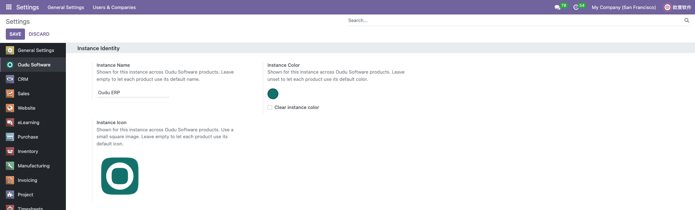

Oudu Base gives installed Oudu modules one shared settings home and a stable instance capability contract. Configure the instance identity once and let each product contribute only its own controls.

Set a shared instance name, identification color and square icon. Installed Oudu products read the same values instead of asking for duplicate identity settings.
Shared identity stays first in the Oudu Software settings page. Installed product modules append their real controls in a predictable order without creating additional settings entries.
Provides a machine-readable, instance-wide manifest for identity and installed Oudu integrations. The shared contract contains no user data and lets compatible clients degrade safely when a capability is absent.
Leave any identity value empty to preserve each product's own default. Normal browser access and unrelated Odoo behavior remain unchanged.
Generated and tested for Odoo 13-19, Community and Enterprise. Oudu Base is a shared dependency and does not replace Odoo or any Community or Enterprise module.